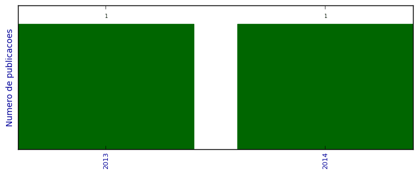

UFSM - Análise do Lattes
Artigos aceitos para publicação

Número total de itens: 2
2014
| 1. | Manzoni de Oliveira, Gelson ; TIRLONI, BARBARA ; Schulz Lang, Ernesto ; Piquini, Paulo Cesar ; HORNER, MANFREDO. Synthesis, crystal structure, and optical characteristics of [Pd2Hg4Cl6{Te(DMB)}6] 2DMF, [HgClTe(DMB)]4, and the ring-forming cluster [Pd12(TePh)24] 2DMF. New Journal of Chemistry (1987). 2014.  [ citações Google Scholar | citações Microsoft Acadêmico | busca Google ] |
2013
| 1. | Back, Davi Fernando ; OLIVEIRA, GELSON MANZONI DE ; ROMAN, DAIANE ; BALLIN, MARCO AURÉLIO ; KOBER, ROGER ; Piquini, Paulo Cesar. Synthesis of symmetric N,O-donor ligands derived from Pyridoxal (vitamin B6): DFT studies and structural features of their binuclear chelate complexes with the oxofilic uranyl and vanadyl(V) cations. Inorganica Chimica Acta (Testo stampato). 2013. [ citações Google Scholar | citações Microsoft Acadêmico | busca Google ] |
(*) Relatório criado com produções desde 1999 até HOJE
Data de processamento: 09/04/2014 19:20:33